Consider solving large sparse linear least squares problems
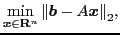 |
(1) |
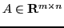
,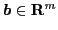
, and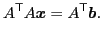 |
(2) |
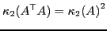
, iterative methods may be slow to converge. Here,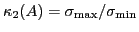
is the condition number, where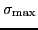
and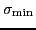
are the largest and smallest positive singular values ofIn this paper, we propose using stationary inner-iteration preconditioners for the generalized minimal residual method (GMRES) for solving least squares problems, and present theoretical justifications for using the inner iteration as preconditioners even for rank-deficient matrices. For the preconditioners, the Jacobi overrelaxation and successive overrelaxation (SOR)-type iterative methods designed for least squares problems are employed. These inner iterations are efficient in terms of computational work and memory. A significant advantage of such inner-iteration preconditioners is that one can avoid explicitly computing and storing the preconditioning matrix. Numerical experiments for large sparse least squares problems including ill-conditioned and rank-deficient ones show that the proposed methods outperform previous methods.
The main motivation for proposing the new preconditioners is to reduce CPU time and memory significantly, and to broaden the scope of problems that can be solved. Note that, previously, GMRES preconditioned by the robust incomplete factorization (RIF) [M. Benzi and M. Tuma, SIAM J. Sci. Comp., 25 (2003), pp. 499-512] was comparable with, but not definitely superior to, reorthogonalized CGLS with RIF in terms of CPU time for ill-conditioned problems [K. Hayami, J.-F. Yin and T. Ito, SIAM J. Matrix Anal. Appl., 31 (2010), pp. 2400-2430]. Moreover, RIF for least squares problems will break down for rank-deficient matrices. We aim to improve on these points.
The left-preconditioned GMRES method for least squares problems proposed in [Hayami et al., 2010] is called the BA-GMRES method. It applies GMRES to
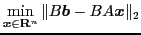
, where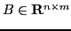
denotes the preconditioning matrix. Conditions for the preconditioner
Instead of explicitly forming and storing an preconditioning matrix  ,
we propose applying several steps of a certain stationary iterative
method for solving the normal equation (
,
we propose applying several steps of a certain stationary iterative
method for solving the normal equation ( ) of the form
) of the form
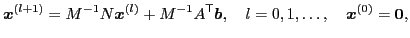 |
(3) |
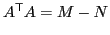
,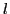
is the number of inner iterations. Define the iteration matrix by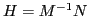
. Tanabe [Numer. Math., 22 (1974), pp. 349-359] defined the following.
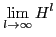
exists, and divergent otherwise.Then, we obtain the following theorem for the stationary inner-iteration BA-GMRES method.
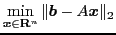
without breakdown for all .
Moreover, we show that the stationary inner-iteration BA-GMRES residual
bound depends on the spectral radius of  .
.
Finally, we will present numerical results that show BA-GMRES preconditioned by the NR-SOR inner iteration outperforms conventional methods for ill-conditioned, rank-deficient, and practical problems. A strategy for tuning the parameters for the NR-SOR inner iteration will be also proposed and shown to be effective.